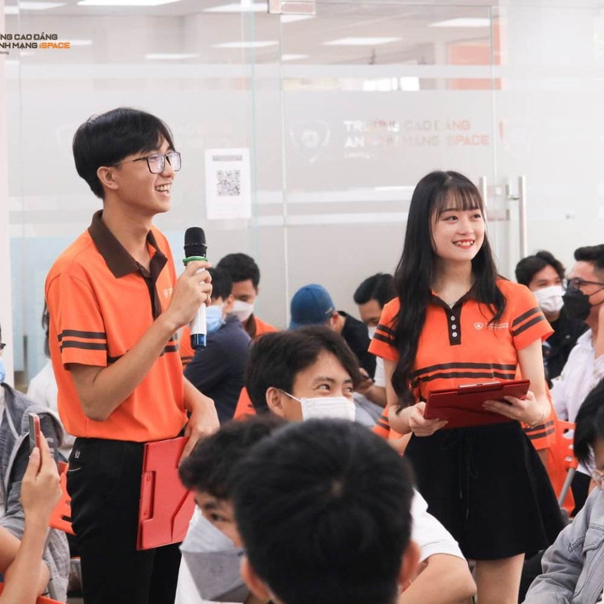
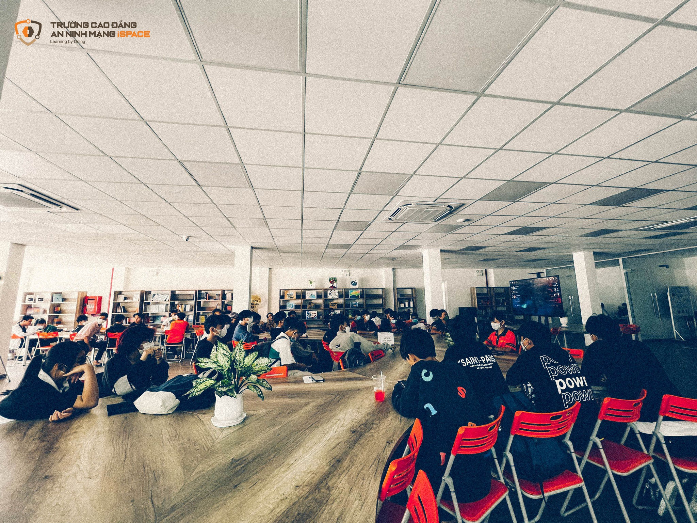

Tri thức ngày xưa ở lại đây,
Ân tình sâu nặng của cô thầy!
Người mang ánh sáng soi đời trẻ,
Lái chuyến đò chiều sang bến đây?
Đò đến vinh quang nơi đất lạ,
Cám ơn người đã lái đò hay!
Ơn này trò mãi ghi trong dạ...
Người đã giúp con vượt đắng cay!

Cùng nhìn lại những khoảng khắc tuyệt vời mà em đã đồng hành cùng trường trong suốt chặng đường vừa qua nhé!
-

Vì sự phức tạp của dịch bệnh Covid nên từ khi bắt đầu vào học chúng em chỉ có những buổi gặp gỡ, giao lưu và học tập Online nhưng điều này không khiến chúng em nản lòng mà lại rất hào hứng và mong chờ vào những ngày sau này. Cảm ơn nhà trường và thầy cô vì vẫn luôn tạo điều kiện tốt nhất cho chúng em được học tập, giao lưu vui chơi với nhau dù chỉ là qua cái màn hình.
Từ những buổi giao lưu, học tập đầu tiên đến hết Tết 2022 -

Cảm ơn nhà trường vì đã tạo cho em cơ hội để có được học bổng, nó đã giúp ích cho cuộc sống em rất nhiều và đây cũng như là một động lực rất lớn để em ra sức học tập, em sẽ cố gắng, nỗ lực hết mình để vươn tới thành công trên con đường mà mình đã chọn.
19/10/2021, ngày mà em nhận được thư chúc mừng học bổng nè🙆 -

Buổi lễ khai giảng đầu tiên khi em theo học tại trường. Tại đây, lần đầu em làm MC, cứ nghĩ là sẽ tệ nhưng tất cả đều tốt đẹp...
Ngày 26 tháng 3 năm 2022 -

Những ngày tham gia giải bóng đá do trường tổ chức, có ngày nắng gắt, có những ngày mưa to, có những ngày đầy gió nhưng mọi người vẫn cháy hết mình với cái gọi là đam mê ấy. Một tràng pháo tay dành cho sự chiến thắng của lớp tụi em 32CCAN02 nào👏👏

Chương trình "Định hướng phát triền ngành An Ninh Mạng - Góc nhìn từ chuyên gia" với những chia sẻ đầy nhiệt huyết, giải đáp thắc mắc tận tình giúp chúng em có hướng đi tốt nhất trong tương lai.
Ngày 4 tháng 6 năm 2022
Tiếng anh chưa bao giờ là hết quan trọng trong thời đại công nghiệp hóa, hiện đại hóa. Chương trình "Tiếng anh - Chìa khóa cơ hội dành cho sinh viên IT" với những lời chia sẽ đầy hữu ích giúp em có thêm động lực cũng như những phương pháp học tập tốt nhất để có thể dễ dàng vượt qua "rào cản" tiếng anh.
Ngày 22 tháng 6 năm 2022
Webinar “Raise your market value with EC-Council cyber security certifications” củng cố thêm kiến thức về các chứng chỉ EC-Council, hỗ trợ cho việc làm trong tương lai.
Ngày 25 tháng 6 năm 2022
Tadaaa... Một ngày cuối tuần vui chơi cùng iSPACE, hội thao với các trò chơi nâng cao tinh thần đồng đội khá là hấp dẫn, giải tỏa căng thẳng sau những buổi học.
Ngày 2 tháng 7 năm 2022
Hoạt động kí kết hợp tác tuyển dụng cùng doanh nghiệp trong chương trình "Điện toán đám mây: Hướng đi "bứt phá" trong ngành IT". Cảm ơn nhà trường đã tạo điều kiện để tụi em sau này có thể được thực tập/ làm việc tại doanh nghiệp Cloud Kinetics Vietnam.
Ngày 6 tháng 8 năm 2022
Chân thành cảm ơn nhà trường, đặc biệt là thầy Duy đã tạo điều kiện cho em được tham gia cuộc thi Sinh viên với An toàn thông tin Asean. Lần đầu tiên em tham dự một cuộc thi lớn như thế này, còn bỡ ngỡ, thiếu sót quá nhiều khiến thầy thất vọng không ít, nhưng cũng từ đây mà em biết thêm nhiều điều thú vị và sẽ rút kinh nghiệm, học hỏi cho lần thi sau nếu có.
12 tiếng đồng hồ trải nghiệm cuộc thi ngày 15/10/2022Tiếp tục những trận đấu giải trí nhưng lại đầy kịch tính, gây cấn của giải đấu "LIÊN QUÂN MOBILE - ĐẤU TRƯỜNG iSPACE". Lớp em mùa trước TRÙM mà mùa này không có giải khá là buồn nhẹ, nhưng lại là một trải nghiệm thú vị khi thi đấu với những đội bên ngoài trường.

Chuỗi sự kiện Chào mừng ngày 20/11 này khiến em rất mong chờ. Từ những trận bóng đá đầy hấp dẫn của Hội thao iSPACE cho tới những tác phẩm dự thi của các bạn sinh viên cho hoạt động "iSPACE trong tôi", hi vọng iSPACE sẽ có một buổi lễ 20/11 khó quên.
Đôi lời em muốn nhắn gửi
Thời gian vừa qua em rất biết ơn nhà trường vì đã tạo cho em nhiều cơ hội để được học tập, trải nghiệm cũng như là vui chơi. May mắn là những tháng ngày phải học Online vì dịch bệnh kéo dài, những sự bất cập trong quá trình học tập cũng không làm em nản lòng mà ngược lại, lại mong chờ hơn để được gặp mọi người, để được trải nghiệm các hoạt động tại trường. Trong khoảng thời gian đồng hành cùng trường, mọi thứ đã khiến em thay đổi rất nhiều, em có hứng thú với học tập hơn, có nhiều niềm vui hơn, biết cố gắng nổ lực hơn khi không còn trong vòng tay của cha mẹ. Em cảm ơn vì những buổi học với đầy sự nhiệt huyết của thầy cô, sự chỉ dẫn tận tình đưa em tới với những cuộc thi lớn mà em từng ao ước. Cảm ơn vì những buổi Webinar hay những buổi Workshop để em được mở mang kiến thức, có cơ hội trao đổi với những người có chuyên môn cao trong ngành. Cảm ơn vì những buổi hoạt động ngoại khóa mà các anh chị cán bộ, công nhân viên nhà trường mang lại tạo cho em những ngày vui chơi thoải mái, trút bỏ hết mọi áp lực trên vai và hết mình với mọi người. Cảm ơn vì tất cả và mong rằng trong tương lai nhà trường sẽ càng hoàn thiện mình hơn, phát triển hơn, là mái trường ấm áp của vô vàn sinh viên.
Chúc mừng ngày Nhà giáo Việt Nam 20/11
Tháng năm dầu dãi nắng mưa
Con đò trí thức thầy đưa bao người
Qua sông gửi lại nụ cười
Tình yêu xin tặng người thầy kính thương
Con đò mộc - mái đầu sương
Mãi theo ta khắp muôn phương vạn ngày.
Một vài lời gửi đến 32CCAN02
Những khoảnh khắc đẹp của iSPACE


{kind=link}
{kind=link}
{kind=link}
🤍